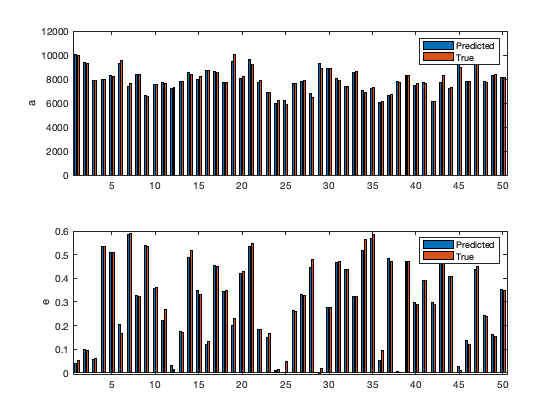
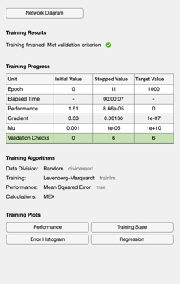
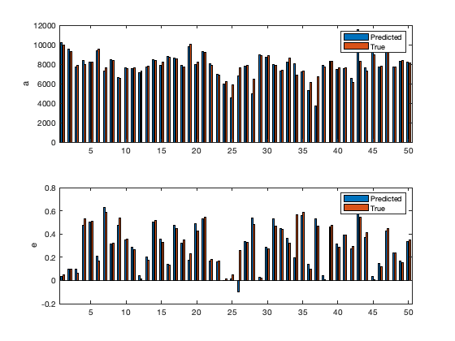
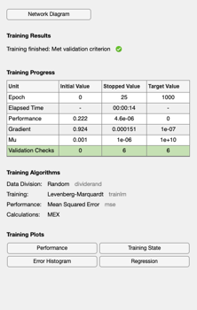
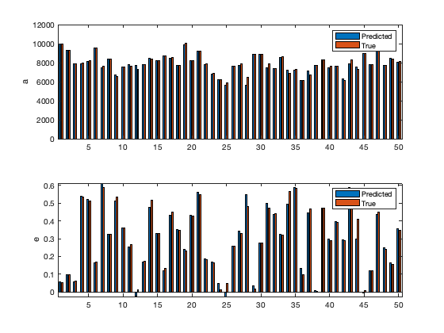

Train and test the Orbit Neural Net
Loads the previously saved OrbitData.mat
Contents
See also:
Orbits, fitnet, configure, train, sim, cascadeforwardnet, feedforwardnet
s = load('OrbitData');
n = length(s.data);
nTrain = floor(0.9*n);
Set up the training and test sets
kTrain = randperm(n,nTrain);
sTrain = s.data(kTrain);
nSamp = size(sTrain{1},2);
xTrain = zeros(nSamp,nTrain);
aMean = mean([s.el(:).a]);
for k = 1:nTrain
xTrain(:,k) = sTrain{k}(1,:);
end
elTrain = s.el(kTrain);
yTrain = [elTrain.a;elTrain.e];
yTrain(1,:) = yTrain(1,:)/aMean; % Normalize the data
kTest = setdiff(1:n,kTrain);
sTest = s.data(kTest);
nTest = n-nTrain;
xTest = zeros(nSamp,nTest);
for k = 1:nTest
xTest(:,k) = sTest{k}(1,:);
end
elTest = s.el(kTest);
yTest = [elTest.a;elTest.e];
yTest(1,:) = yTest(1,:)/aMean;
Train the network
net = fitnet(10);
net = configure(net, xTrain, yTrain);
net.name = 'Orbit';
net = train(net,xTrain,yTrain);
Test the network
yPred = sim(net,xTest); yPred(1,:) = yPred(1,:)*aMean; yTest(1,:) = yTest(1,:)*aMean; yM = mean(yPred-yTest,2); yTM = mean(yTest,2); fprintf('\nFit Net\n'); fprintf('Mean semi-major axis error %12.4f (km) %12.2f %%\n',yM(1),100*abs(yM(1))/yTM(1)); fprintf('Mean eccentricity error %12.4f %12.2f %%\n',yM(2),100*abs(yM(2))/yTM(2));
Fit Net Mean semi-major axis error -0.1208 (km) 0.00 % Mean eccentricity error -0.0059 1.94 %
Plot the results
NewFigure('Predictions using Fitnet') subplot(2,1,1) bar(1:nTest,[yPred(1,:);yTest(1,:)]); ylabel('a') legend('Predicted','True') subplot(2,1,2) bar(1:nTest,[yPred(2,:);yTest(2,:)]); ylabel('e') legend('Predicted','True')
ans =
Figure (1: Predictions using Fitnet) with properties:
Number: 1
Name: 'Predictions using Fitnet'
Color: [0.94 0.94 0.94]
Position: [560 528 560 420]
Units: 'pixels'
Use GET to show all properties
 Train the cascade forward network
net = cascadeforwardnet(10);
net = configure(net, xTrain, yTrain);
net.name = 'Orbit';
net = train(net,xTrain,yTrain);
 Test the network
yPred = sim(net,xTest); yPred(1,:) = yPred(1,:)*aMean; yM = mean(yPred-yTest,2); fprintf('\nCascade Forward Net\n'); yM = mean(yPred-yTest,2); yTM = mean(yTest,2); fprintf('Mean semi-major axis error %12.4f (km) %12.2f %%\n',yM(1),100*abs(yM(1))/yTM(1)); fprintf('Mean eccentricity error %12.4f %12.2f %%\n',yM(2),100*abs(yM(2))/yTM(2));
Cascade Forward Net Mean semi-major axis error -57.0837 (km) 0.72 % Mean eccentricity error -0.0072 2.37 %
Plot the results
NewFigure('Predictions using Cascade Forward Network') subplot(2,1,1) bar(1:nTest,[yPred(1,:);yTest(1,:)]); ylabel('a') legend('Predicted','True') subplot(2,1,2) bar(1:nTest,[yPred(2,:);yTest(2,:)]); ylabel('e') legend('Predicted','True')
ans =
Figure (2: Predictions using Cascade Forward Network) with properties:
Number: 2
Name: 'Predictions using Cascade Forward Network'
Color: [0.94 0.94 0.94]
Position: [560 528 560 420]
Units: 'pixels'
Use GET to show all properties
 Train the feed forward network
net = feedforwardnet(10);
net = configure(net, xTrain, yTrain);
net.name = 'Orbit';
net = train(net,xTrain,yTrain);
 Test the network
yPred = sim(net,xTest); yPred(1,:) = yPred(1,:)*aMean; yM = mean(yPred-yTest,2); fprintf('\nFeed Forward Net\n'); yM = mean(yPred-yTest,2); yTM = mean(yTest,2); fprintf('Mean semi-major axis error %12.4f (km) %12.2f %%\n',yM(1),100*abs(yM(1))/yTM(1)); fprintf('Mean eccentricity error %12.4f %12.2f %%\n',yM(2),100*abs(yM(2))/yTM(2));
Feed Forward Net Mean semi-major axis error -21.5556 (km) 0.27 % Mean eccentricity error -0.0016 0.52 %
Plot the results
NewFigure('Predictions using Feed Forward Network') subplot(2,1,1) bar(1:nTest,[yPred(1,:);yTest(1,:)]); ylabel('a') legend('Predicted','True') subplot(2,1,2) bar(1:nTest,[yPred(2,:);yTest(2,:)]); ylabel('e') legend('Predicted','True')
ans =
Figure (3: Predictions using Feed Forward Network) with properties:
Number: 3
Name: 'Predictions using Feed Forward Network'
Color: [0.94 0.94 0.94]
Position: [560 528 560 420]
Units: 'pixels'
Use GET to show all properties
 Copyright
Copyright (c) 2019 Princeton Satellite Systems, Inc. All rights reserved.